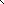
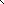
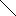
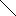

 



What is PageRank?
PageRank relies on the uniquely democratic nature of the web by using its vast link structure as an indicator of an individual page's value. In essence, Google interprets a link from page A to page B as a vote, by page A, for page B. But, Google looks at more than the sheer volume of votes, or links a page receives; it also analyzes the page that casts the vote. Votes cast by pages that are themselves "important" weigh more heavily and help to make other pages "important".
Before we start...
We will need to familiarize ourselves with some of the language used herein.
What is a graph?
A graph is an abstract representation of a set of objects that are connected by links. The objects are referred to as nodes (or vertices) and their connections as edges.

There are two main types of graphs. Undirected graphs and directed graphs. A undirected graph is one where the edges between two nodes are considered the same. We are not interested in that type of graph for our discussion.
We are concerned with directed graphs, that is, graphs where the connections have a specific direction, like in the image to the left.
Nodes that have no outgoing edges are called sinks, and nodes that have no incoming edges are called pumps.
In our specific case, we are considering web pages to be the "nodes" and the links from one page to another to be the "edges". We will also deal with pages that act as "sinks", that is, pages that have no outbound links.
Our graph is a representation of a network of web pages and how they are linked to one another.
And what does this have to do with PageRank?
PageRank is a certain mathematical property of the graph that describes a network of pages and their links. We can't really understand this concept unless we are directly dealing with the mathematics involved.
There are a number of mathematically equivalent ways to solve for the PageRank of a graph representing the link structure of a network of web pages. A convenient approach is to use matrices.
When using matrices to compute PageRank we are measuring the eigenvector centrality of a modified matrix based on the network.
Whoa, that just got pretty dense. Don't worry. We'll wrap our heads around this stuff pretty quickly.
Adjacency Matrix
In order to do any sort of computation we have to describe our network of interconnected web pages in some sort of mathematical language. We will be using the language of matrices. The branch of mathematics that deals with matrices is called linear algebra.
If you are so inclined, MIT has graciously made available a great video lecture series on linear algebra taught by Gilbert Strang.
What is a matrix?
Simply put, a matrix is a rectangular array of elements. It has a number of rows and a number of columns. Matrices are used for a number of different purposes and are a cornerstone of computational mathematics. Almost every advanced topic in computer science, from 3D graphics, to AI, to network analysis like PageRank involves matrices.
To the left we have a 2x2 matrix, containing four elements. It is a 2-dimensional square matrix.
We'll come back to this matrix when we are discussing a very important property of matrices, their eigenvectors.
Let's construct a matrix of our own that is specific to our network, where the rows and columns represent the pages that we are analyzing.
Here is the resulting x square matrix:
For example, Page 1 . Page 2 .
This grid is what we will call the adjacency matrix of the graph that describes our network of web pages.
Now that we have described this network in the language of linear algebra, we need to further translate it in to a computer programming language. Luckily, the majority of languages have linear algebra libraries. In this example we're using a Javascript library called Sylvester. It has a number of classes that allow you to model matrices and vectors in any number of dimensions.
In programming terms, a matrix is similar to an array of arrays.
For the remainder of this article, we will be adding functions to Sylvester's Matrix class.
Row Stochastic Matrix
Since PageRank can also be thought of as a representation of how likely it is that a person randomly clicking on links well end up on a certain page, we need to convert our matrix in to a representation that represents that probability. "Stochastic" and "probability" are interchangeable terms within the realms of our discussion.
For example, since Page has on it, there is a 1 in chance that you will randomly click on any of one of the links.
This type of matrix is known as a stochastic matrix, and in our case, we are looking for a row stochastic matrix. That is, we want every row to add up to 1. We are turning our representation of a network of links to a form that takes in to account the probabilities that a random user will browse to a certain page.
However, what happens if there is a page that acts as a sink, that is, it has no outbound links? How do these "dangling pages" affect the calculation?
If you randomly stumble across the rare web page that has no links to other pages we will assume that you have equal probability to end up on any of the other web pages in the network. That is, we will assume that there are links to every page from a page that has no links.
In order to be fair to the other pages that do have links, these random transitions are added to all pages in our network, with an additional residual probability called a "damping factor".
This "damping factor" is included to increase the probability that we'll end up at a page with more network centrality and counter some of the abuses that spammers could use to game this algorithm.
Neither adjustments made for "dangling pages" or "damping factors" are necessary for computing network centrality, but they are indeed properties of PageRank and are what differentiates and makes the algorithm unique.
Here is our function that computes the row stochastic matrix:
Matrix.prototype.row_stochastic = function(damping_factor) {
var row_length = this.elements[0].length;
var d = (1 - damping_factor) / row_length;
var row_total = [];
for (var x = 0; x < row_length; x++) {
row_total.push(0);
for (y = 0; y < row_length; y++) {
row_total[x] += this.elements[x][y];
}
}
var a1 = this.elements.clone();
for (var x = 0; x < row_length; x++) {
for (var y = 0; y < row_length; y++) {
if (row_total[x] > 0) {
a1[x][y] = a1[x][y]/row_total[x] + d;
}
else {
a1[x][y] = (1/row_length) + d;
}
}
}
return $M(a1);
}
As you can see on line 4, we compute our additional probabilities of moving from one page to another as a variable called d, which is based on a damping factor and the total number of web pages.
Next, we iterate through each row and store an array of the sum of all elements in the row, as shown on lines 8 - 13.
Finally, we again iterate through each row, this time dividing each element by its row's total, fulfilling our stochastic requirements. We also add our variable d to not only pages that have no outbound links (and therefore are assumed to link to all pages), but to every page, in order to be fair to the pages that do have links. This is done on lines 17 - 26.
When using a damping factor of 0.825 we get the resulting matrix:
Things have very suddenly become very abstract. We've gone from one representation, our graph of a network of web pages, through to a matrix representation of that graph, and ended up with a matrix that takes in to account all sort of peculiar probabilities related to the likelihood of a user ending up on a given page.
It gets confusing because we're representing something that we can think of in a number of ways, as a graph, a matrix, or a set of probabilities. In turn, our use of language jumps between "graph language", "matrix language", and "probability language" quite rapidly.
This aspect of mathematics has always been the most difficult to deal with. A lot of the times the principles that are being discussed are easy to understand, but the language that mathematicians use to talk about these principles are arcane to say the least. Don't feel bad. A lot of mathematicians are only fluent in whatever specific branch they are familiar with and have just as hard a time figuring out the languages of branches they are unfamiliar with!
Eigenvector Centrality
This is where things start to get magical. It as also the hardest part to visualize. Every step so far has made a good amount of sense.
PageRank is a measure of network centrality with some tweaks made that are specific to web browsing, as we've discussed above. Since we are pretty much only dealing with matrices at this point we'll refer to this as eigenvector centrality.
This eigenvector centrality is a property of our initial graph of the network of web pages. Our previous steps, along with quick transposition of our matrix, lead us to our penultimate step towards computing PageRank.
What is a vector?
At the most abstract level, a vector is nothing more than a member of a vector space.
A vector in 2D vector space, called a euclidean vector, is a geometric object that has a magnitude and a direction. In the case of 2D computer graphics, the relationship of pixels to one another in an image can be considered vectors.
Vectors are "acted upon" by matrices.
Here is the same 2x2 matrix that we saw above. It is an example of a shear mapping.
Matrices are used for a lot of different purposes. They are heavily used in the realms of 2D and 3D graphics.
One way that matrices are used is for performing linear transformations. If you've ever used the transform tool in Photoshop, you are watching linear algebra in operation.
This is the result of applying the above 2-dimensional matrix to a set of pixels in a "vector space". Matrices are always applied to vector spaces.
What is an eigenvector?
When we apply our matrix to a set of pixels, it sheers all of the pixels to the right by a factor of 1.25. Notice that the horizontal relationships of the pixels do not change at all.
Eigenvectors are the vectors in a space that when acted upon by a matrix have only their magnitude affected, and not their direction. In the case of our sheer mapping, vectors that are perfectly horizontal are eigenvectors, as their direction is not changed. Again, in terms of pixels, the relationship between pixels are not affected in a horizontal direction, but are in all other directions.
However, the matrix that we've constructed is not a 2x2 matrix and it doesn't exist in a 2D vector space. In inhabits a vector space that is purely abstract, so the concept of an eigenvector is harder to visualize.
A vector in a stochastic vector space is called a stochastic or probability vector. It is a vector that adds up to 1 and describes the likelihood of certain events taking place. The eigenvector that we are going to compute is a probability vector. It describes the probabilities of ending up at certain web pages based on the link structure of our network, no matter what page you start on. The concept of "direction" that we discussed when referring to the above linear transformation loses it's ordinary meaning.
Instead of, as in a 2D space where applying a matrix to a set of vectors alters the literal direction that they point in, we can think of this matrix as "directing" people clicking on links towards certain pages. The "eigenprobability" of our modified adjacency matrix is the PageRank.
Phew!
How do we calculate the eigenvector?
Matrix.prototype.eigenvector = function() {
var row_length = this.elements[0].length;
var a = [];
for (var i = 0; i < row_length; i++) {
a.push([1]);
}
var ev = $V(a);
for (var i = 0; i < 100; i++) {
ev = this.multiply(ev);
}
return $V(ev);
}
Vector.prototype.normalize = function() {
var row_length = this.elements.length;
var t = 0;
for (var i = 0; i < row_length; i++) {
t += this.elements[i];
}
return this.multiply((1.0/t));
}
Matrix.prototype.pagerank = function() {
var damping_value = 0.825
var row_stochastic = this.row_stochastic(damping_value);
var transposed_matrix = row_stochastic.transpose();
var eigenvector = transposed_matrix.eigenvector();
var normalized = eigenvector.normalize();
return normalized.elements;
}